This tutorial teaches you, step by step, how to plan a communication activity, get it approved, run it, record who came and which media covered it, and share news with all TASAF staff. Every picture comes from the real system. The names and numbers in them are made up.
1. What this module is for
The Communications module helps the TASAF communications team do four things:
| You want to… | Use |
|---|---|
| Plan and track a communication activity (press conference, media mission, awareness meeting…) | Activities |
| Record who came and which media covered it | the activity's Participants and Media Coverage tabs |
| Share news with all TASAF staff inside the system | News Feed |
| See what is coming and how well it went | Calendar and Dashboard |
Everything you do is saved with your name and the date, so the team can see who did what.
2. Who does what
The system gives each person a role. Your role decides which menus and buttons you see. If a button in this guide is missing for you, your role does not allow it. That is normal.
| Role | What this person does |
|---|---|
| Communications Officer | Plans activities, fills in the details, runs the activity, records attendance and media coverage, writes News Feed posts |
| Communications Manager | Approves or rejects activities and News Feed posts, cancels approved activities, pins and unpins posts, marks channels as sent, deletes records |
| All other staff | Read the News Feed and see announcements when they log in |
3. Finding your way around
- Log in to the MIS with your username and password.
- In the left menu, open Communications.

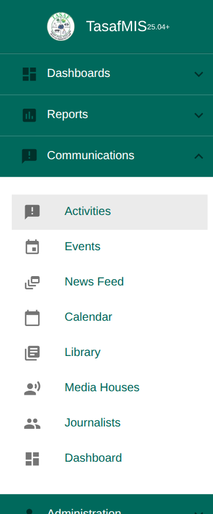
| Menu | What you find there |
|---|---|
| Activities | All communication activities. Start here. |
| Events | The same list, only events (meetings, launches, gatherings) |
| News Feed | Internal news and announcements for staff |
| Calendar | Activities by month, week or agenda |
| Library | Message templates, stakeholder contact lists and files (logos, photos, documents) |
| Media Houses | Newspapers, radios, TV stations and websites |
| Journalists | Journalists and media staff |
| Dashboard | Numbers: activities, people reached, media coverage |
Two more places matter for approvals:
- The bell at the top of the screen tells you when something waits for you, or when your work was approved or rejected. Click a notice to open the item.
- Approvals ▸ My approvals in the main menu lists the News Feed posts (and other requests) waiting for your decision.
Lists work the same everywhere:
- the Search Criteria box at the top narrows the list, and Search applies it
- click a row to open it
- the round + button at the bottom right creates a new record

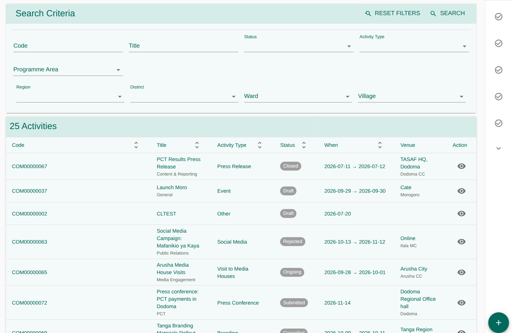
4. Lesson 1 · Plan an activity
Who: Communications Officer
- Go to Communications ▸ Activities.
- Click the round + button.
- Fill in the form. Fields with a star (*) are required.
| Field | What to write | Example |
|---|---|---|
| Title * | A short name people will recognise | Press conference: PCT payments in Dodoma |
| Activity Type | What kind of activity it is | Press Conference, Media Mission, Community Awareness Session… |
| Programme Area | The programme it supports | PCT, SCPW, E-payment, Economic Inclusion, General |
| Objective (What) | One or two sentences on why you are doing it | Explain the new payment dates to the media. |
| Start * and End * | Date and time | 12 Nov 2026 10:00 to 13:00 |
| Venue | Where it happens | Dodoma Regional Office hall |
| Virtual / hybrid | Tick it if people join online, then name the platform | Zoom |
| Region | Region or district | Dodoma |
| Description | Any other useful details |

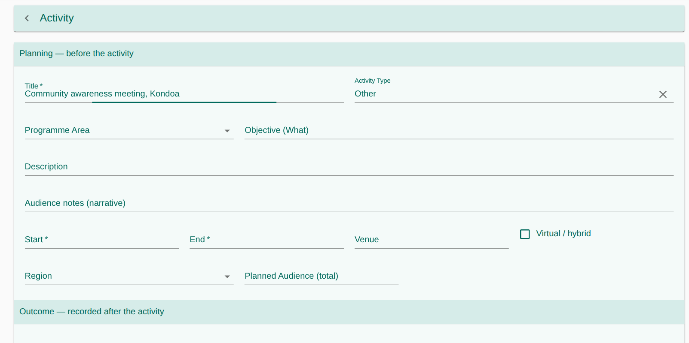
- Click Save (the round disk button at the bottom right).
The system gives the activity a code such as COM00000071. You cannot
choose or change it. The status is Draft.

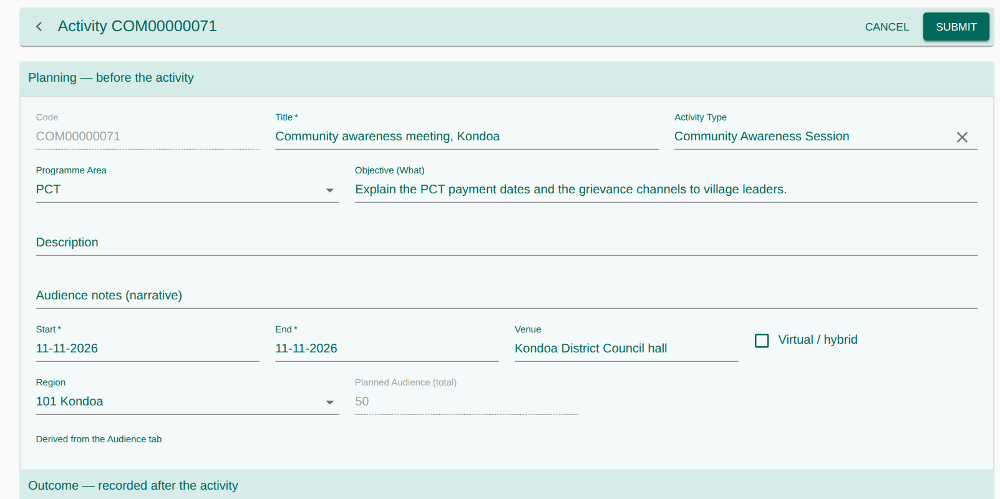
- Red (staff clash): you cannot save until you change the time or the staff.
- Yellow (place clash): only a warning. You can still save.
5. Lesson 2 · Add the details (the tabs)
Below the form there is a row of tabs. Fill them in while the activity is still a Draft.

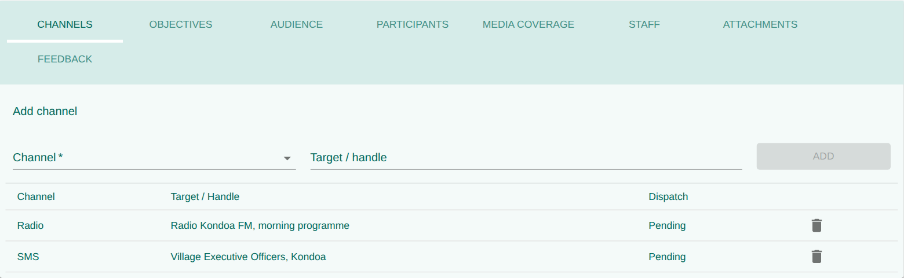
| Tab | What you add | Tip |
|---|---|---|
| Channels | How the message goes out (Email, SMS, Social Media, Radio, TV, Print, Website) and the target | One row per channel |
| Objectives | What you want to achieve: Objective, Indicator, Target, Achieved | e.g. "Media houses reporting", target 10. Fill in Achieved after the event |
| Audience | Which group, and how many people: Stakeholder Type, Planned Reach, later Actual Reach | The planned total on the form adds itself up from this tab |
| Participants | The named people invited (Lesson 5) | |
| Media Coverage | The media houses you invite (Lesson 5) | |
| Staff | Who in the team works on it, and their role (Owner, Contributor, Reviewer…) | A red warning means the person is busy elsewhere at that time |
| Attachments | Concept note, budget, press release, invitation; later the report and photos | PDF, Office files, pictures, audio or video, up to 25 MB |
| Feedback | What people said: source, respondent, rating 1–5, comment | Usually after the event |

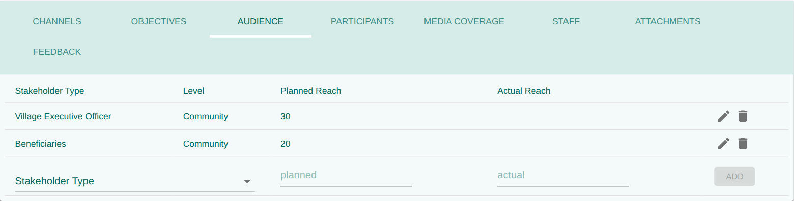

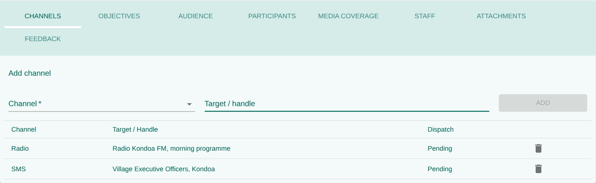
- Channels and Staff can no longer change.
- Objectives and Audience stay open for the results only (Achieved, Actual Reach). The targets cannot change.
- Participants, Media Coverage, Attachments and Feedback stay open until the activity is Archived or Cancelled.
6. Lesson 3 · Send it for approval
The Officer submits
- Open your Draft activity.
- Check the form and the tabs.
- Click Submit at the top. The status becomes Submitted and the details are locked. If you try to save a change to them, the system says the activity is submitted and can no longer be changed.
Every Communications Manager gets a bell notice: “title is awaiting your approval”.
The Manager approves or rejects
- Click the notice in the bell. The activity opens. (Or open Communications ▸ Activities, filter by status Submitted and open the activity.)
- Read it.
- Click Approve (status Approved) or Reject (status Rejected).
The Officer gets a bell notice: “title was approved” or “title was rejected”. The Manager's “awaiting your approval” notice closes by itself.

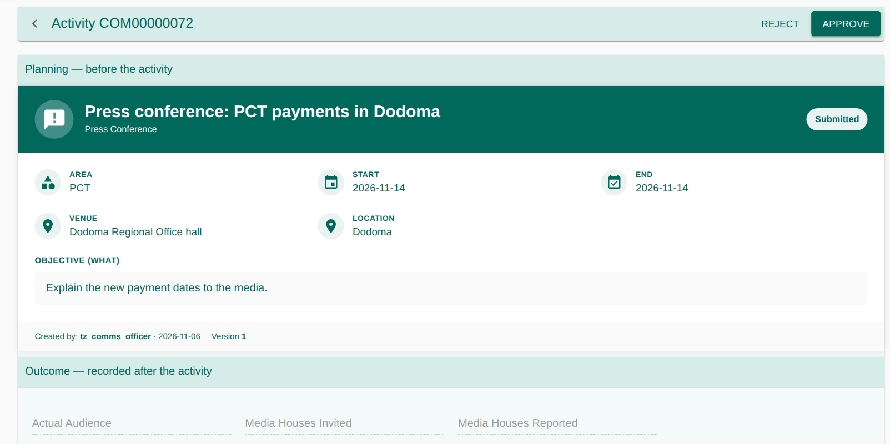
If it was rejected
- The Officer clicks the notice (or opens the activity) and clicks Revise. It goes back to Draft.
- They fix what is needed.
- They click Submit again. The Manager is told again.
7. Lesson 4 · Run the activity, from start to finish
After approval the Officer moves the activity forward one step at a time. Only the next possible button is shown.
| Button | When to click it | Who |
|---|---|---|
| Schedule | The date is confirmed and invitations are going out | Officer |
| Start | On the day, when the activity begins | Officer |
| Complete | When the activity has ended | Officer |
| Close | When everything is recorded (attendance, coverage, feedback) | Officer |
| Archive | When nobody needs to work on it any more | Officer |
| Cancel | When it will not happen | Officer while Draft; Manager once approved |
Schedule checks again for staff clashes. If someone is double-booked, it refuses and tells you who.
Recording that a message went out
The MIS does not send emails or SMS itself. When you have sent the message the usual way, open the Channels tab and click Mark as sent (the paper-plane icon) on that row. The status becomes Marked as sent, with your name and the time. The button appears once the activity is Scheduled, for users with the dispatch right.

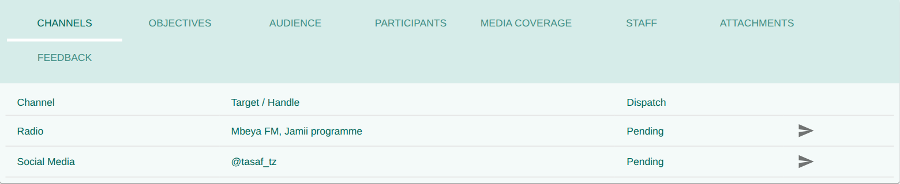
8. Lesson 5 · After the event: attendance and media coverage
These tabs stay open after the event, until the activity is Archived or Cancelled. Also record the Achieved values (Objectives), the Actual Reach (Audience), the feedback and the report or photos (Attachments).
Participants (attendance register)
Add one person:
- Open the Participants tab.
- Fill in Full name, Gender, Stakeholder type, Organisation, Designation, Phone and Email.
- Choose a status: Invited, Confirmed, Attended, Absent or Replaced.
- Optional: link the person to a TASAF beneficiary.
- Click Add participant.
Invite a whole list: under Invite from a stakeholder list, choose the list (Lesson 8) and click Invite members. Everyone on it is added as Invited. People already on the register (same phone, or same name and organisation) are skipped.
After the event: change each person to Attended or Absent. The Actual Audience on the form counts the people marked Attended. You do not type it.

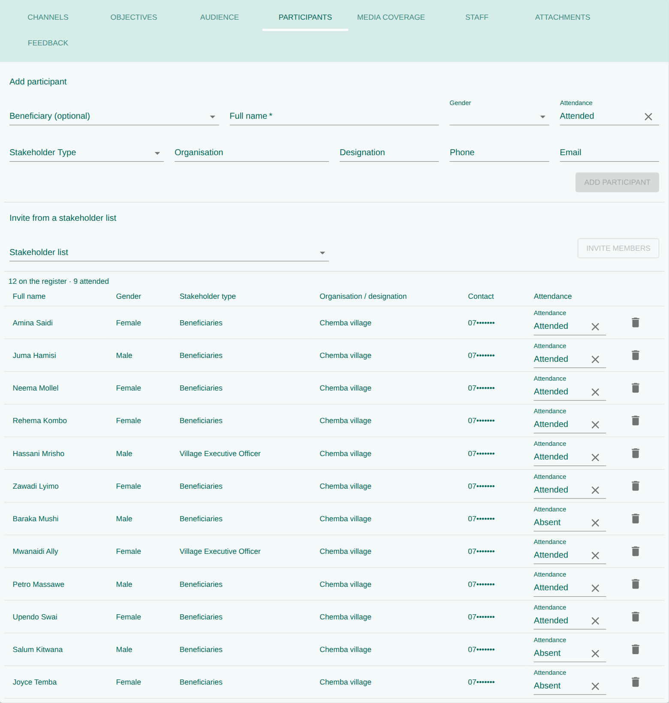
Media Coverage
- Open the Media Coverage tab and add each media house you invited.
- Tick Invited, Attended and Reported as they apply.
- When they publish or broadcast a story, add the coverage type, the link and the journalist who filed it.
- Give the story a Quality score from 1 (poor) to 5 (excellent).
"Media Houses Invited / Reported" on the activity form now count themselves from this tab.

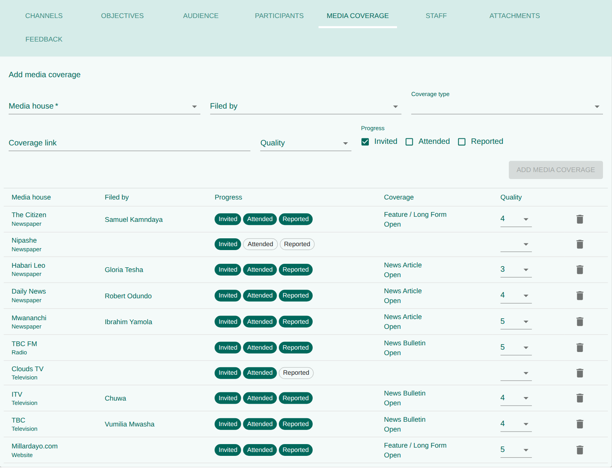
Results: Achieved and Actual Reach
On the Objectives and Audience tabs, click the pencil on a row, type the result and click Save. After Submit only the result box can be changed; the plan stays grey.

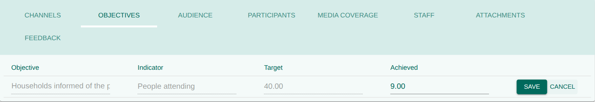
9. Lesson 6 · The News Feed
The News Feed is the internal noticeboard. Every staff member can read it. Posts of type Announcement also pop up once for each person when they log in; each person closes it with Dismiss.

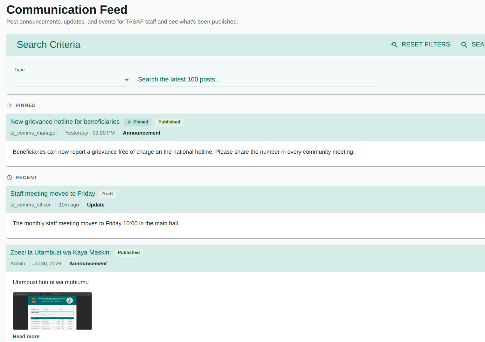

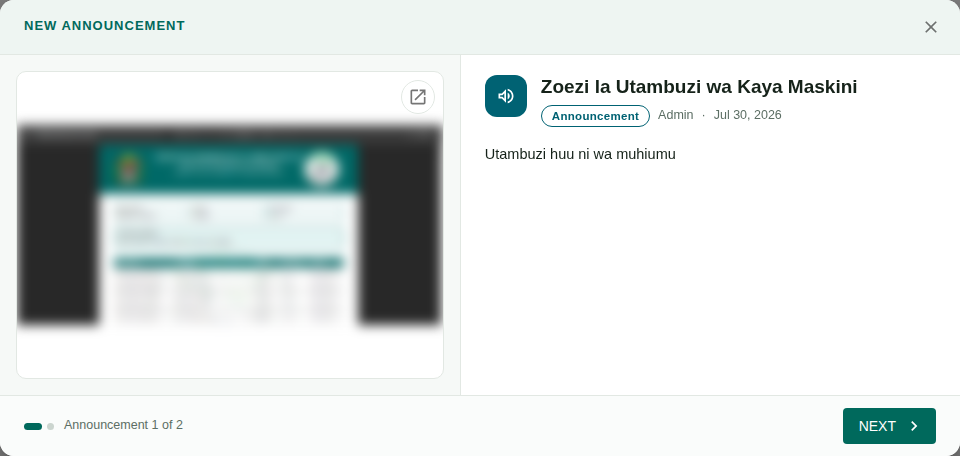
Write a post Officer
- Go to Communications ▸ News Feed and click Post an update…
- Optional: choose Start from a template. The title and message fill in from the Library; Undo puts back what you had.
- Write a Title and a message. The toolbar has bold, lists, links and pictures.
- Choose the type: Announcement, Update, Media Highlight or Newsletter.
- Optional: Attach files (PDFs, pictures, spreadsheets).
- Click Save draft. The post shows the label Draft. Only you and the Manager can see it.
- Click Submit for approval under your post. The label becomes Pending approval.

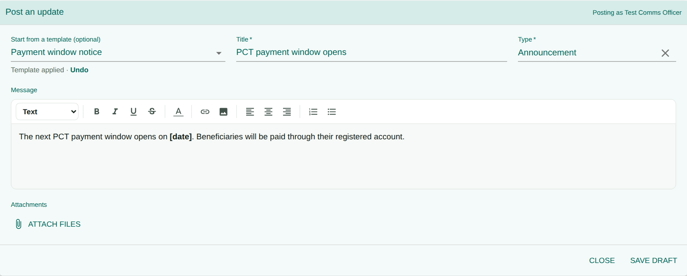

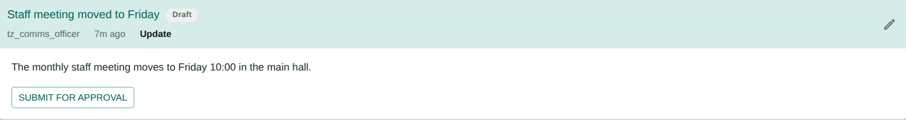
Approve, reject and pin Manager
- The bell shows “title is awaiting your approval”. Click it to open the approval request. (Or open Approvals ▸ My approvals and open the request.)
- Read the post and click Approve or Reject. When rejecting, write the reason in the comment box.
- Approved: the post is published for everyone. The Officer gets a bell notice that it was approved, and another that it was published.
- Rejected: the Officer gets a bell notice. The post shows a red box with your comment; the Officer fixes it (pencil) and submits again.
- The pin icon keeps a post at the top of the feed. Unpin it when it is old.
10. Lesson 7 · Calendar and Dashboard
Calendar
Communications ▸ Calendar shows activities by Month, Week or Agenda. Click an activity to open it; click an empty day to plan a new one on that date. Other modules adds Training and Coordination activities so you can avoid clashes with them.

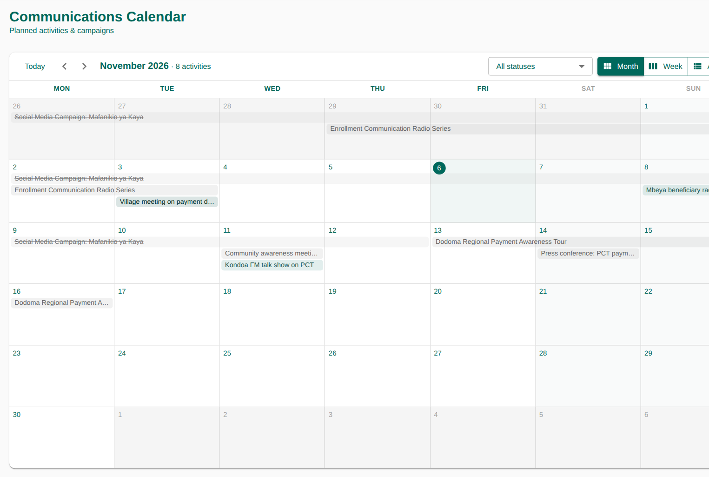
Dashboard
Communications ▸ Dashboard gives the numbers for reports:
- Activities: total, this week, upcoming, and by status, type and channel.
- Audience reach: planned against actual, and by level (National, Regional, PAA, Community).
- Participants: registered, attendance rate, attendance by gender.
- Media coverage: houses invited and reported, coverage rate, average quality.
Use the filters at the top: From and To (activities starting in that period) and Region (everything inside it is included). The numbers update when you change a filter.

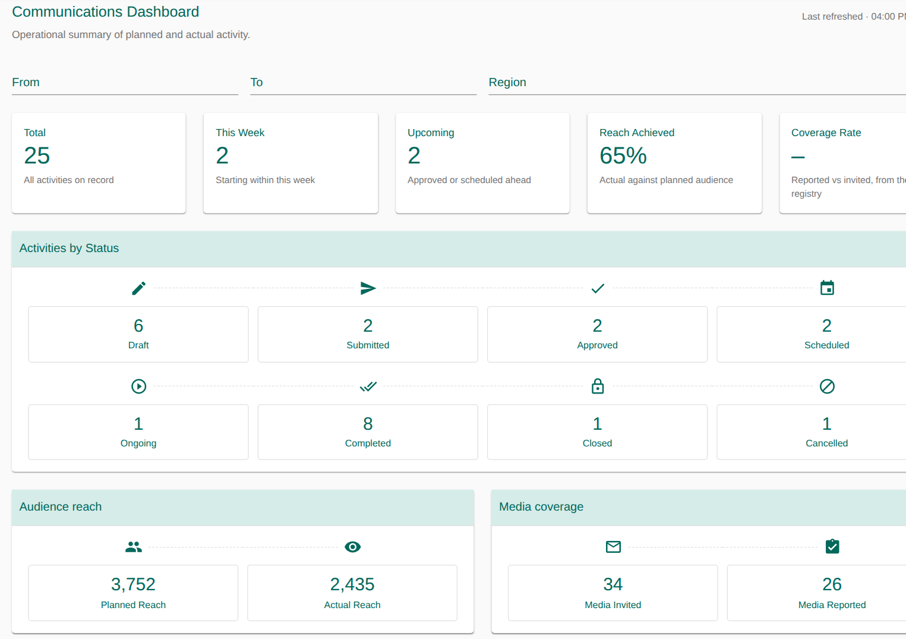
11. Lesson 8 · Library, media houses and journalists
Library
| Tab | What it holds | Used by |
|---|---|---|
| Templates | Ready-made messages: code, name, channel, subject, message | "Start from a template" in the News Feed |
| Stakeholder lists | Named lists of people (name, organisation, phone, email, location) | "Invite from a stakeholder list" in Participants |
| Assets | Logos, brand files, photos, videos, documents | Download and reuse |

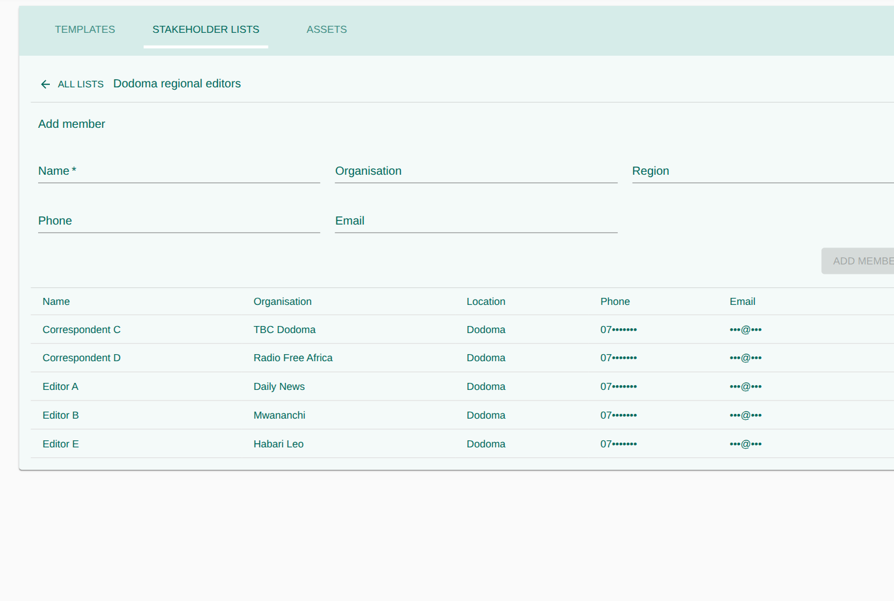
Media Houses
The official list of newspapers, radio and TV stations, websites and blogs. Each has a code such as
MH00012 made by the system, and a category (medium and reach). The quality column is the average of
the ratings given in Media Coverage; you cannot type it.
Journalists
Media staff, each with a code such as MJ00031. A journalist belongs to a media house or is
freelance. The record shows the stories they filed and their average quality.

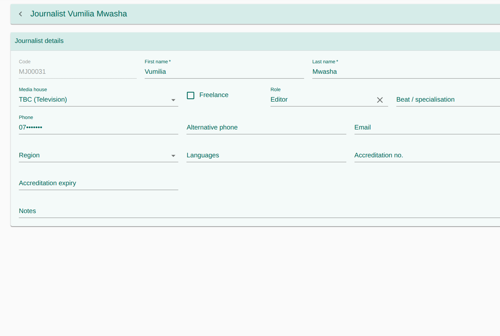
12. Known limits (tell trainees)
Tell trainees about these limits so they don't think they made a mistake.
| # | What the user sees | What to do for now |
|---|---|---|
| 1 | Mark as sent only records that a message went out. The MIS sends no email or SMS. | Send messages the usual way, then mark them. |
| 2 | A rejected activity does not show why it was rejected. The Officer gets a bell notice, but without the reason. (For News Feed posts the reason is shown.) | The Manager tells the Officer directly. |
| 3 | Uploaded files may be lost when the server is updated, until the storage fix is applied. | Keep your own copy of important files. |
| 4 | Everyone with access sees the activities of all regions. | Use the filters (Activities list, Dashboard). |
13. Practice exercises
Exercise 1 · Plan and approve Officer + Manager · 20 min
- Officer: create "Community awareness meeting, Kondoa" for next Tuesday, 09:00–12:00, area PCT, type Community Awareness Session.
- Add one channel (Radio), one objective (target 50 people), two audience rows and yourself as Owner.
- Submit it.
- Manager: check the bell shows “… is awaiting your approval”, and click it to open the activity.
- Manager: reject it, and give the reason by phone.
- Officer: check the bell shows “… was rejected”. Revise, change the venue, Submit again.
- Manager: Approve it. Officer: check the bell shows “… was approved”.
Exercise 2 · Run it Officer · 15 min
- Schedule the activity.
- Invite a stakeholder list, then add two people by hand.
- Start the activity; mark 3 people Attended and 1 Absent. Complete it.
- Check that "Actual Audience" now shows 3.
Exercise 3 · Media coverage Officer · 10 min
- Add two media houses, both invited.
- Mark one as reported, with a link, the journalist and quality 4.
- Open the Dashboard and find your numbers.
Exercise 4 · News Feed Officer + Manager · 15 min
- Officer: write an Announcement from a template, attach a PDF, Save draft, then Submit for approval.
- Manager: check the post has no Publish button while it is pending. Open the bell notice and Reject it with the comment “Add the date”.
- Officer: check the red box shows “Add the date”. Fix the post and Submit for approval again.
- Manager: approve it from Approvals ▸ My approvals, then pin it in the News Feed.
- Officer: check the bell says the post was approved and published.
- Log in as any other user: the announcement pops up. Dismiss it.
- Officer: edit the published post and check that it goes back to Draft.
Exercise 5 · Results after the event Officer · 10 min
- On the activity from Exercise 2, type the Achieved value (pencil) and the Actual Reach on each audience row.
- Add one feedback row and upload a photo in Attachments.
- Open the Dashboard, choose this month and your region, and find your numbers.
14. Quick reference card
| I want to… | Go to | Click |
|---|---|---|
| Plan an activity | Activities | + |
| Send it to my manager | the activity | Submit |
| See what waits for me | the bell, or Approvals ▸ My approvals | click the notice |
| Approve an activity | the bell notice, or the activity (Submitted) | Approve / Reject |
| Fix a rejected activity | the activity | Revise, then Submit |
| Record who came | Participants tab | status Attended |
| Invite a saved list | Participants tab | Invite members |
| Record a news story | Media Coverage tab | tick Reported, give Quality |
| Record a message I sent | Channels tab | Mark as sent |
| Record results | Objectives / Audience tab | pencil, then Save |
| Tell all staff something | News Feed | Post an update… |
| Send a post for approval | News Feed, my draft | Submit for approval |
| Approve a post | the bell notice, or Approvals ▸ My approvals | Approve / Reject (with a comment) |
| See the month | Calendar | Month |
| Get numbers for a report | Dashboard | From, To, Region |
15. Words you will see
| Word | Meaning |
|---|---|
| Activity | Any planned communication work: press conference, media mission, meeting, newsletter… |
| Event | An activity where people gather. The Events menu shows only these. |
| Status | The stage an activity is at (Draft, Submitted, Approved…) |
| Audience | The groups you want to reach and how many people |
| Participants | The named people invited or present |
| Stakeholder type | A group such as Journalist, Village Executive Officer or Beneficiaries, at a level (National, Regional, PAA, Community) |
| Stakeholder list | A saved list of named contacts you can invite in one click |
| Media house | A newspaper, radio, TV station, website or blog |
| Coverage | A story a media house published or broadcast about the activity |
| Channel | The way a message goes out: email, SMS, radio… |
| Template | A ready-made message you can reuse |
| Pin | Keep a post at the top of the News Feed |
| Clash | The same staff member or place booked for two activities at the same time |
| Maker / checker | One person prepares (maker), another approves (checker) |
| Bell | The notifications icon at the top of the screen: what waits for you and what was decided |